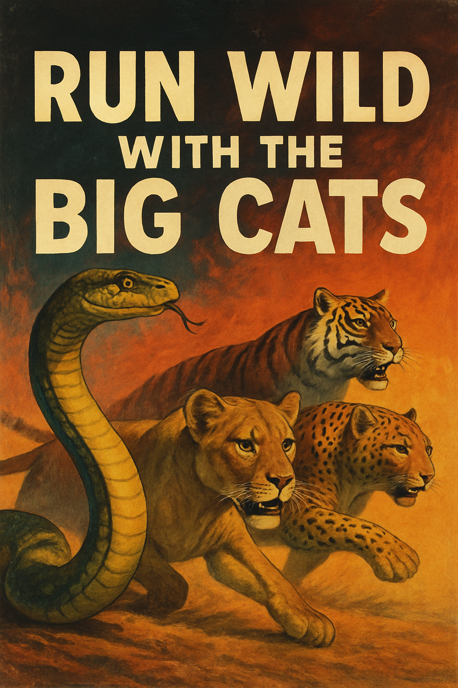
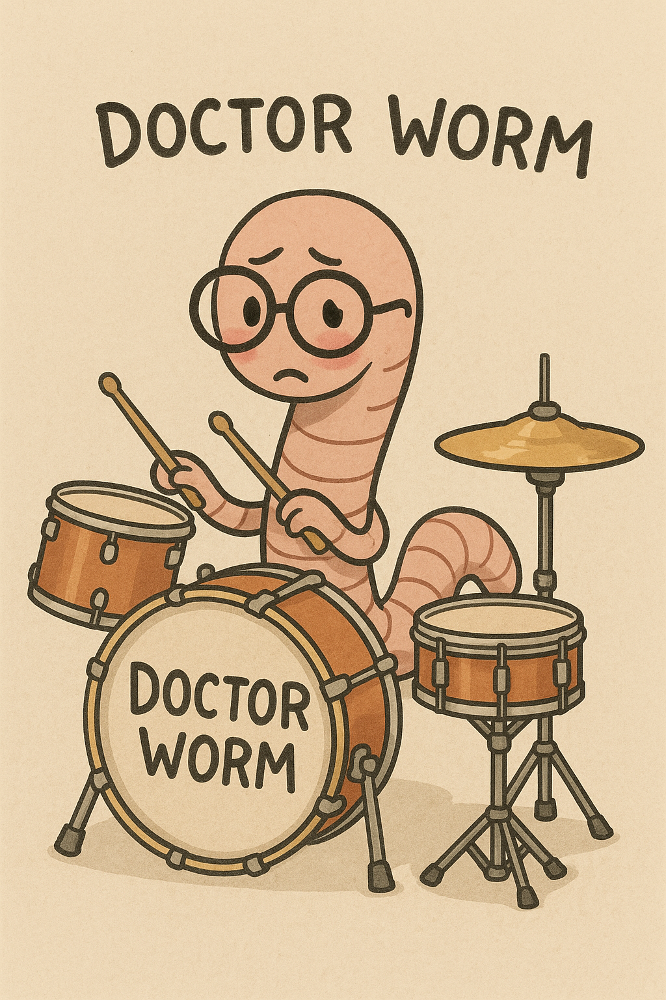
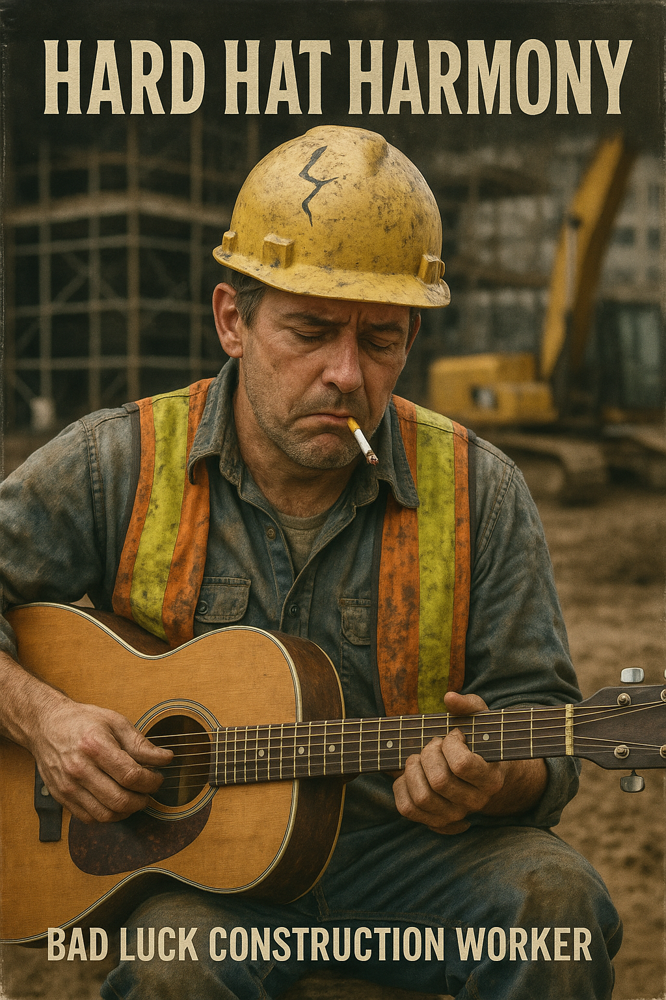
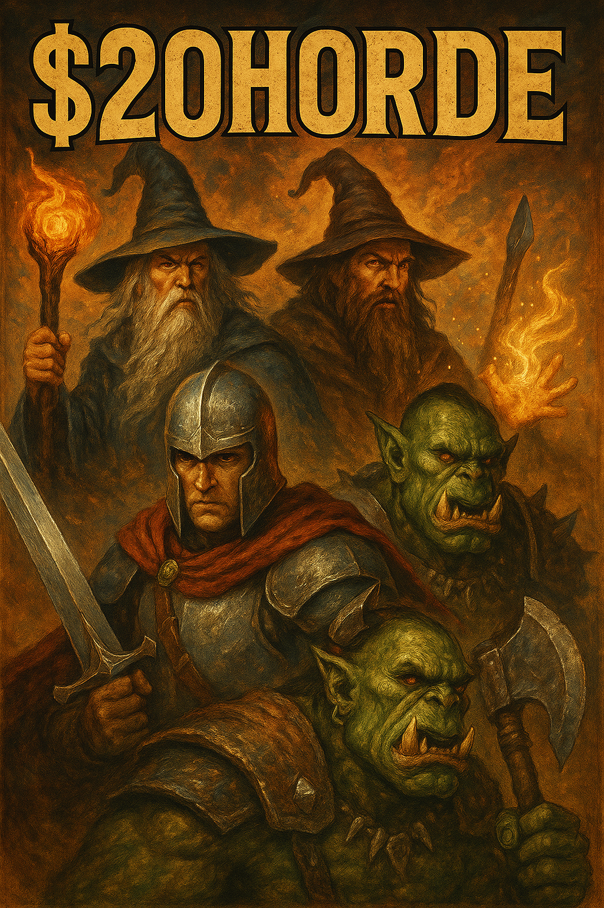
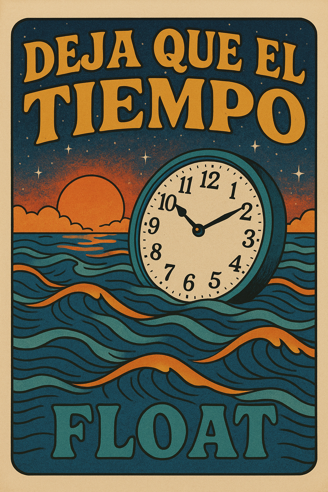

GKRecords
🌓
Where Music Comes Alive

Slither and Dream

Doctor Worm

Hard Hat Harmony
Chicken Parm Noir
Shadow Waltz

The $20Horde Sea Shanty

Deja Que El Tiempo
Stay a While PT.1
Stay A While PT2.
Whispering Rivers